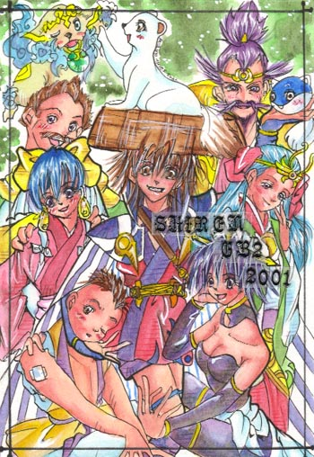
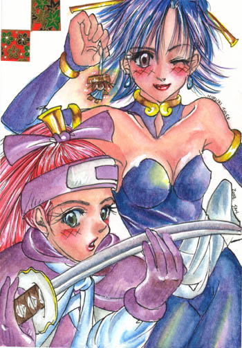
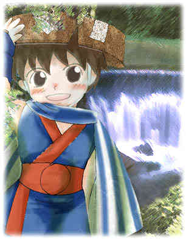
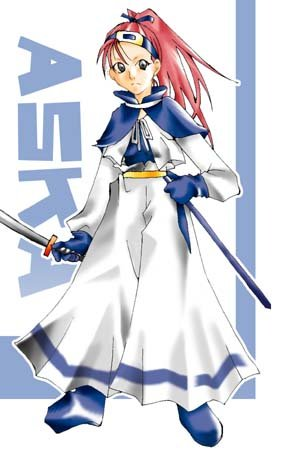
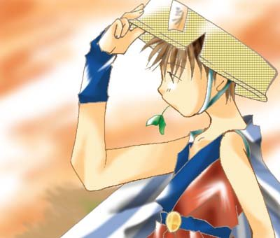
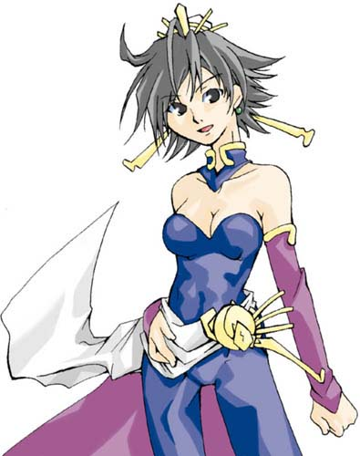
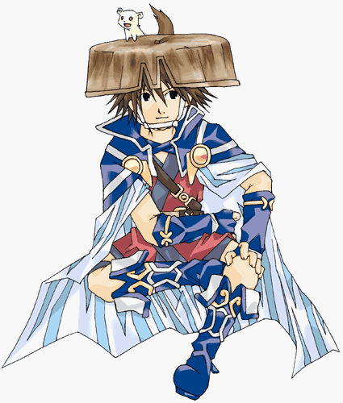
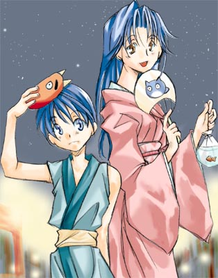
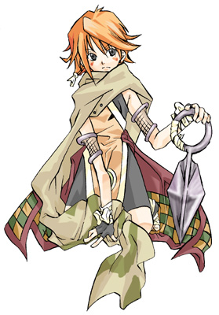
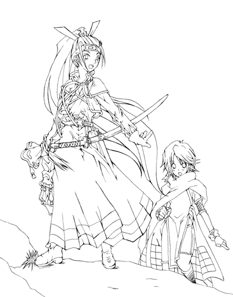

| 『风来同人画集』>>>>> [Page1] 【Page2】 |
|  |
▲GB2的全家福，看懂左上角那个是谁了吗？^_^嗯，没错，就是狗狗！汪汪！
▲此画刊于【公式ファンブック ビックリの��2】 |
 |
▲真是阴盛阳衰、女性当道啊，画中是风来最具人气的2位女性角色【アスカ・お�o】，西林被画得超级小而且还被吊在半空里晃悠晃悠……
▲此画刊于【公式ファンブック ビックリの��3】 |
 |
| ▲这个……似乎是N64版童年时期的西林吧。 |
 |
| ▲这个是飞鸟没错吧，脸部似乎有点变形。 |
 |
| ▲为什么大多数人都把西林画成叼着树叶？ |
 |
| ▲性感的お�o，风来外传2的主角？ |
 |
| ▲看西林这身打扮应该是GB2的了。 |
 |
| ▲月影村怪物里西林的恋人ケヤキ，那个小弟弟是ナギ。 |
 |
| ▲这个应该是在长谷川薰的原画基础上临摹的作品，画得很好。 |
 |
| ▲这个估计也是在长谷川薰的原画基础上临摹的作品，还未上色。 |
| >>>>> [Page1]
【Page2】 |